Yen Tran
Product manager
A builder who untangles problems that don't come with clear answers: product work shaped by user research, hard trade-offs, and what actually made it to production.
Personal expense app
Approvy
Lead qualification chatbot
Let’s build together!
Book a call (opens in new tab)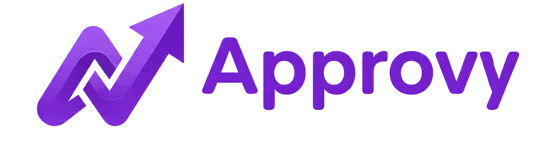
Approvy - Product Case Study
Background
As a Product Manager at a relationship well-being startup, you’re tasked with investigating emerging user needs, validating a new problem space, and shaping a solution concept that could inform future product direction.
Requirements
- Please write a PRD that includes at least
- High-level artifacts:
- Problem statement
- User research artifacts (JTBD, user interviews, job stories with desired outcomes)
- Describe your solution (what is it, how it solves the selected problem)
- Workflow
- ORD
- Low-level artifacts:
- Activity diagram
- Wireframes
- User stories
- High-level artifacts:
- You are free to determine the scope of this feature however you see fit.
- Timeline: November 5 - November 29, 2025 (3 weeks from the day you receive this request)
Abbreviations
| Abbreviation | Explanation | |
|---|---|---|
| 1 | JTBD | Jobs To Be Done |
| 2 | ORD | Object Relationship Diagram |
| 3 | PM | Project Manager |
| 4 | PRD | Product Requirements Document |
Role and contributions
In this case study, I led a cross-functional team of five and owned the product from problem definition through solution delivery. Throughout the project, prioritization and feasibility trade-offs were determined across user needs, business goals, and technical constraints to move the project forward.
Reader’s guide
The case study is divided into three main sessions:
- Project Overview
- Problem Space’s materials which can be placed in a separated document and used as a PDD (Product Discovery Document)
- Solution Space’s materials which can be placed in a separated document and used as a PRD (Product Requirement Document)
Approvy turns meeting decisions into clear, time-bound approval requests so teams can stay aligned, avoid misunderstandings, and move projects forward smoothly.
- Capture decisions in a simple project-scoped log so context stays with the request.
- Notify the right stakeholders with a clear deadline and one-click actions (approve/reject).
- Track outcomes and timestamps centrally to remove ambiguity and surface bottlenecks.
Problem assumption
Teams spend significant time coordinating across meetings, email, and documents. Critical decisions often stall or get misinterpreted because there's no lightweight, standardized way to request and record approvals.
Target groups
Primary: product managers and project managers who own decisions and need approvals to move work forward.
Secondary: approvers (managers, leads, and cross-functional stakeholders) who need quick context and a low-friction way to approve.
Methodology
I applied the Double Diamond framework to structure discovery and early solution exploration: discover (problem, diverge), define (problem, converge), develop (solution, diverge), deliver (solution, converge). The split was roughly 70% problem space (research and converge via user interviews, JTBDs, a job map, and a clear problem statement) and 30% solution space, diverging into early concepts: workflow, object relationship diagrams, user stories, wireframes, and mockups.
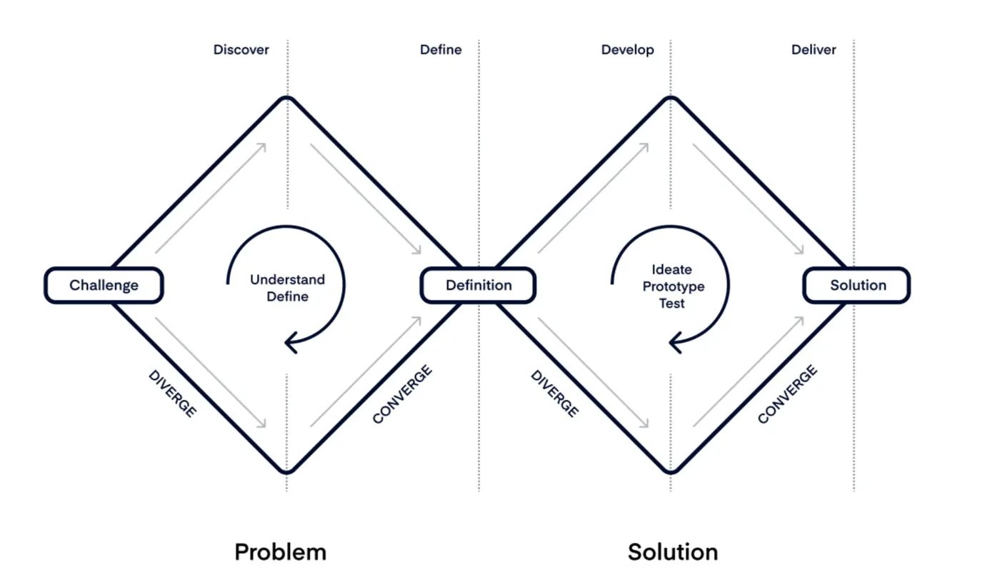
User interviews
I targeted young professionals (1+ year of experience, under 35) working in cross-functional environments. Why this segment: they have enough work experience to have real exposure to workplace dynamics, a high willingness to try new tools as early adopters, easy access for interviews and testing, and the segment is large and scalable across modern tech, agency, and corporate environments.
I ran qualitative interviews to surface assumptions and build testable hypotheses, structured around five job steps (Define + Locate, Prepare + Execute, Monitor, Modify, Conclude), each with its own research questions. I interviewed 8 people from the target segment: an initial 6 to surface early patterns, then 3 follow-ups after refining the questions. Raw notes and recordings stayed confidential per interviewees' requests; only anonymized summaries and synthesized insights are included here.
Key insights
- Relationships are strategic, not social. Building working relationships is an intentional, strategic choice tied to career success; interviewees prioritize actions that build trust and professional recognition over casual socializing.
- Psychological impact appears first, then productivity drops. Poor relationships affect mood first; withdrawal, avoidance, and reduced collaboration follow. Emotional friction is an early warning sign.
- Silence → late pushback loop is a core pattern. A PM issues a request, gets no clarifying questions, then faces rejection later due to "not understanding." The lack of an explicit acknowledgement step causes misalignment.
- Shared evidence and structured language help resolve disputes. Teams that bring data or structured evaluation reduce subjective argument and increase agreement.
Job map
I converted those insights into a step-by-step job map, with the core job framed as "collaborate effectively in cross-functional projects": Define → Locate → Prepare → Confirm → Execute → Monitor → Modify → Conclude, each step grounded in real actions, problems, and insights pulled directly from the interviews.
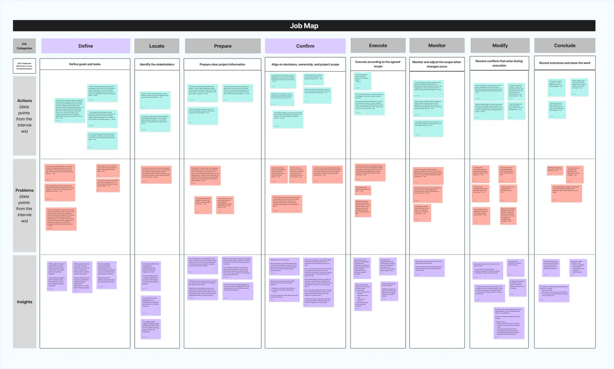
Prioritize job steps
I focused the MVP primarily on the Confirm step, using an outlier case as a deep-dive, while keeping lightweight support for the upstream Define step. Interviews showed that ambiguity at the beginning is the root cause of most downstream problems; Define and Confirm are the "guarding" steps where a team can prevent rework instead of reacting to it, and interviewees had already invented informal workarounds that pointed to unmet needs there.
Outlier case
Zooming into one interviewee's case (Ms. XX) surfaced the root cause directly in her own words: a illusion of consensus caused by colleagues giving the "silent treatment," plus the workaround she'd already invented: a manual "evaluation table" to force a decision, with no mechanism to hold other teams accountable for it.
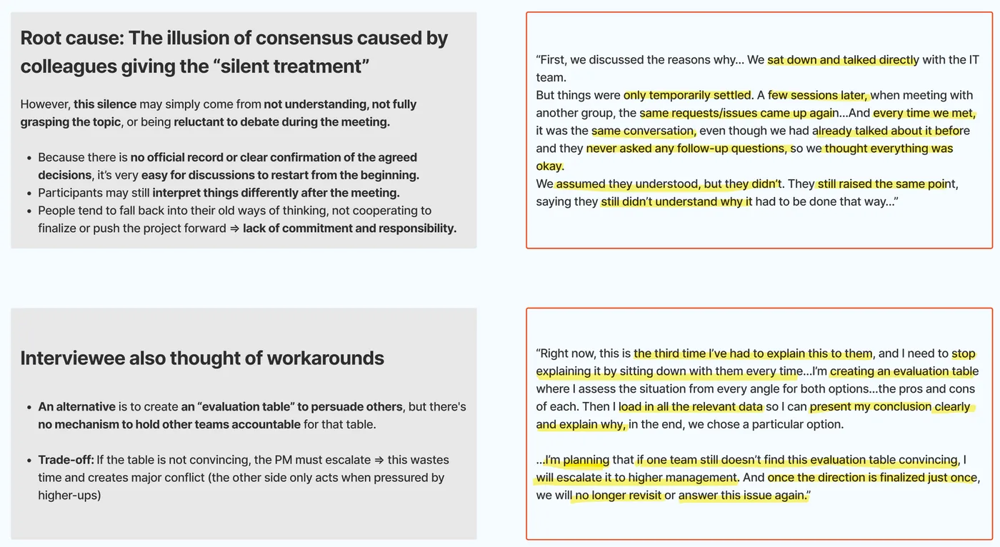
Assumption and JTBDs
With these implications (an illusion of consensus from silent treatment in Confirm, and no official record of agreed decisions in Define), I refined the underlying causal assumption: project managers who manage cross-functional contributors struggle to confirm whether alignment has actually been reached, caused by a lack of visible, multi-party sign-off and no confirmation gate. (I don't assume recorded sign-off is the only causal lever; manager engagement, team norms, and the quality of the Define step are other variables; this stayed a testable hypothesis.) That became two JTBDs:
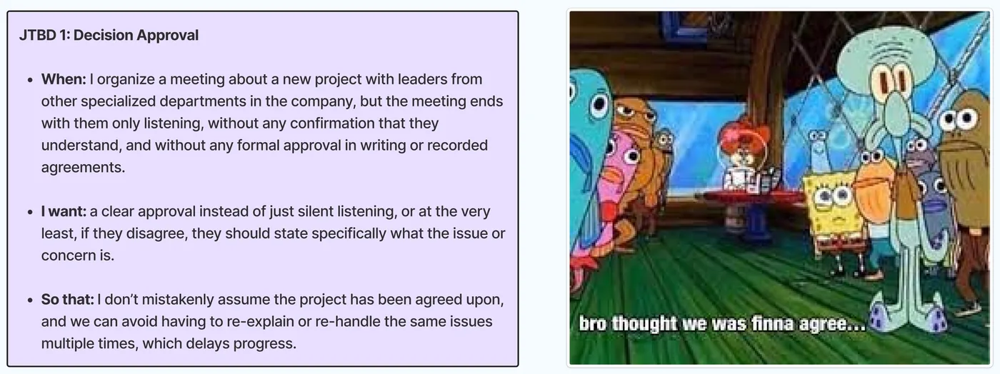
Prioritize JTBDs
I chose JTBD1 (Decision Approval) since it's the root cause behind JTBD2, drives greater business impact, carries a stronger emotional payoff, is easier to address with concrete solutions like workflow approvals and audit trails, and has a higher chance of success because it relies less on changing human behavior.
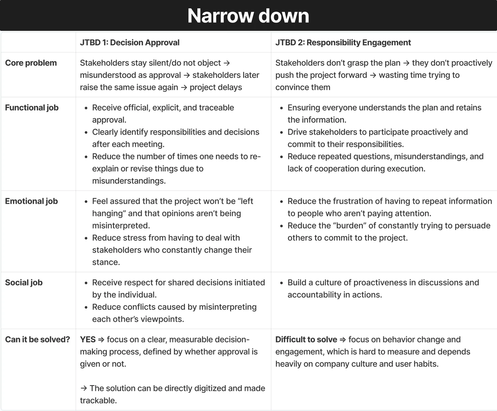
Problem statement
PMs managing cross-functional projects struggle to secure clear, auditable approvals from stakeholders in a timely way, making it difficult to avoid misunderstandings and causing delays or uncertainty when trying to finalize a project's decisions. As a job-to-be-done: when I organize a meeting about a new project with leaders from other specialized departments, and it ends with them only listening, without confirmation that they understand, and without any formal approval in writing, I want a clear approval instead of silent listening, or at minimum a specific stated concern if they disagree, so that I don't mistakenly assume the project has been agreed upon and don't have to re-explain or re-handle the same issues multiple times.
Solution idea
With the problem statement and JTBD established, I identified six key needs the solution had to bridge between the goal and the outcome: enable fast decision-making without delays, have documented proof of approval, know immediately if there's an objection or delay, avoid presenting and resolving the same issue repeatedly, and ensure clear accountability across departments.
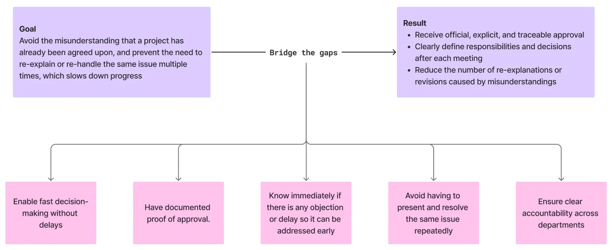
Competitor analysis
I reviewed three existing tools against that criteria: loqbooq (transparent decision logging, but approvals can stall if key members are unavailable, and it only documents "what" and "why," not deeper analysis), Wrike (full project management, but heavyweight and less specialized for decision logging), and DecisionDesk.io (end-to-end workflows, but a steep learning curve and UI complexity for non-technical users). I concluded the most effective approach was an independent web app that guarantees enforceable approvals, a stable audit trail, and easy tracking.
Product concept
That became Approvy: a SaaS web app for documenting project decisions, helping PMs create meeting notes and obtain clear, timely approvals from stakeholders, reduce delays and repeated explanations, and create a transparent, traceable decision history, with core features like decision logs, a time-bound approval mechanism, automated approval workflow, and a full audit trail.
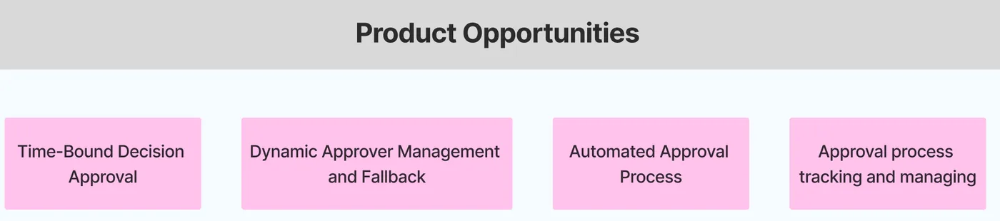
High-level artifacts
With the concept defined, I mapped the workflow across both roles (Project Manager and Approvers), the database objects, and the object relationship diagram.
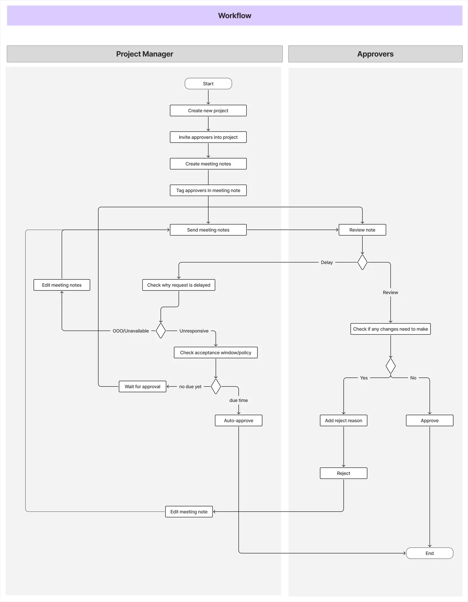
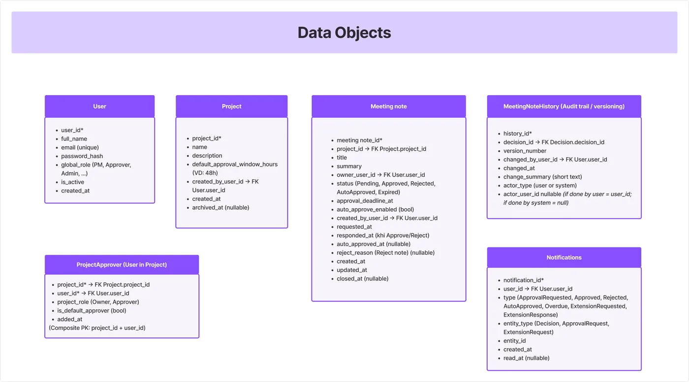
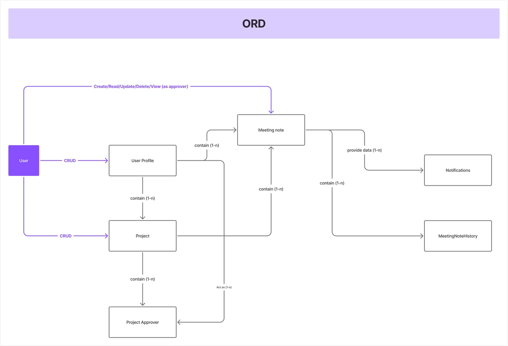
Low-level artifacts
I prioritized user stories with a MoSCoW-style must-have / nice-to-have split across nine flows (signup, project creation, meeting notes, approver assignment, timebound deadlines, review and send, await approval, monitoring, and recording/closing), then built activity diagrams and mockups for both the PM's view and the approver's view.
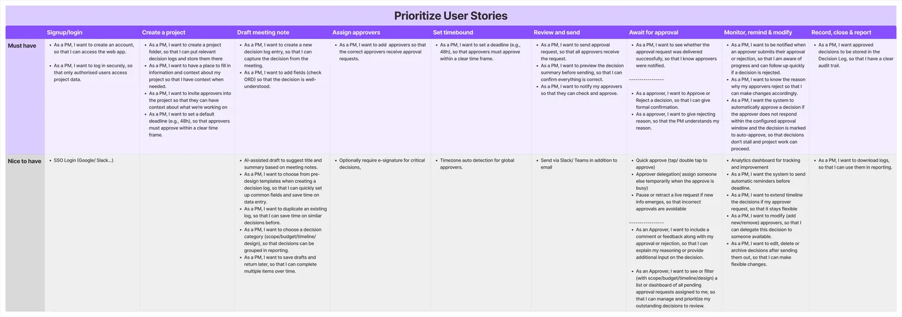
Mockups: PM's view
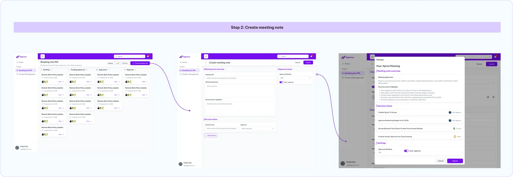
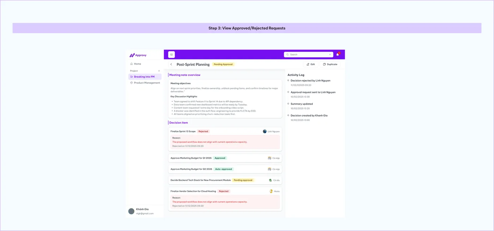
Mockup: Approver's view
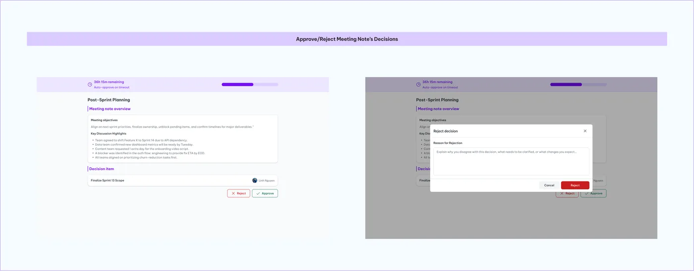
Enhancements
Beyond the MVP: success metrics (documented approval rate, median time to approval, on-time approval rate), a three-phase feature roadmap (MVP → scale & reduce friction → governance & analytics), a pilot launch plan (onboard 3 to 5 PMs, build onboarding content, targeted outreach), marketing tactics (content, community/partnerships, paid), and a freemium monetization model.
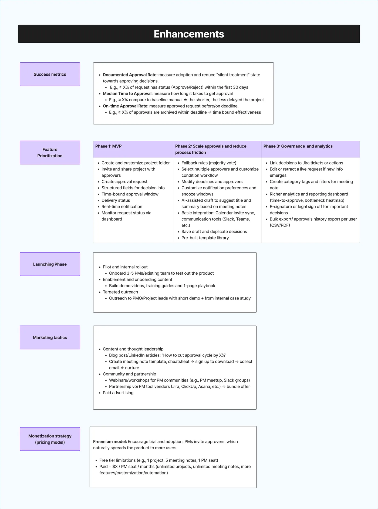
References
- Product artifacts on Figma (English) (opens in new tab)
- Product artifacts on Figma (Vietnamese) (opens in new tab)
- Video presentation (opens in new tab): AI-dubbed English audio by default; switch the audio track for Vietnamese.
Lead qualification chatbot
Context
The product I was working on was a platform used by QA engineers and development teams. It was accessible enough to get started, but getting real value from it required technical knowledge and a clear use case; buyers typically needed some skill familiarity before fully committing. At the time, the inbound motion consisted of a two-person sales team: every prospect who wanted to learn more, get a demo, or ask a technical question came through them directly, with a ~48-hour response window. I was on the Growth team, sitting between product and the sales motion to scale the self-service journey (PLG), which let me see where the existing approach could improve.
Mapping the problem
Before jumping to a solution, I mapped how the existing inbound workflow actually operated, from the moment a prospect landed on the website to the moment a lead was accepted or rejected. The map showed a structural mismatch: once a message landed with the sales rep, the workflow branched into something much heavier. The real cost wasn't any single step; it was that the full sequence repeated for every inbound lead regardless of how likely it was to convert. High-fit prospects waited in the same queue as low-fit ones, and the team had no way to tell the difference until they'd already done the work.
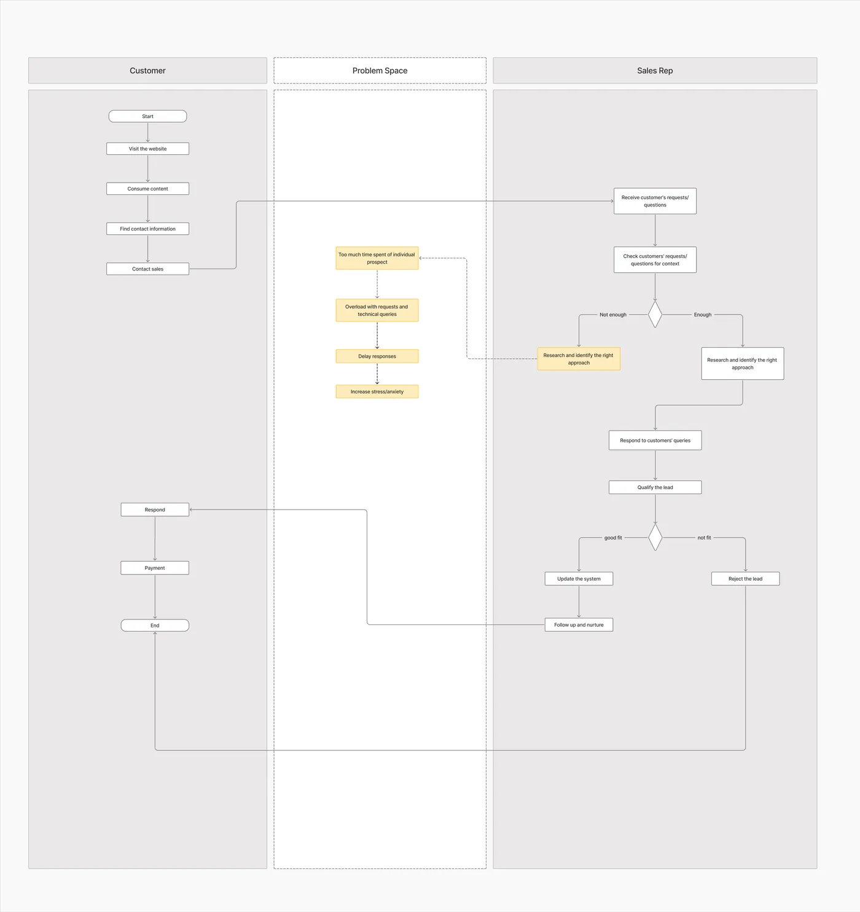
Looking at how the team operated, two gaps stood out. First, an existing demo request form captured contact information (name, email, company, job title, team size, an open text field) but not intent: the rep could see who was asking, but not why, what problem they were solving, or where they were in their buying journey, so every conversation still started from scratch. Second, not every inbound message could realistically become a sales conversation (fit depends on need, budget, timeline, and reaching the right person), but the workflow treated every message the same regardless of how likely it was to convert.
Job story and problem statement
After validating these insights with the sales team, I wrote the job story: when inbound leads contact me, I usually have to manually research each prospect's background, handle a large number of requests across niche and technical use cases, and qualify each lead individually without knowing upfront if they truly intend to buy. I want leads to have already engaged with product resources on their own, and their basic context and intent captured before the first conversation, so that I can immediately focus on high-intent prospects while the rest are handled and nurtured automatically.
That became the problem statement: the two-person inbound team struggled to prioritize and qualify high-intent leads due to the large volume of requests, resulting in slower response times, missed opportunities, and a lower-quality customer experience, for both the external prospects evaluating the product and the internal sales team trying to serve them.
Choosing where to focus
I mapped three possible use cases (lead qualification, self-service FAQ, and handoff to a sales rep) against user value, business value, and strategic impact, and chose to solve lead qualification first because it mapped directly to the team's North Star metric: improving MQL → SQL conversion. The other two use cases supported the same funnel but were secondary outcomes.
Solution and scope
I evaluated the realistic build options against the team's constraints using an impact-effort matrix. A chatbot won because it was the only option that solved both problems at once (capturing leads and qualifying them automatically, like an alternative human agent), and the team's existing FreshChat relationship made it a practical choice, since the infrastructure was already partially in place.
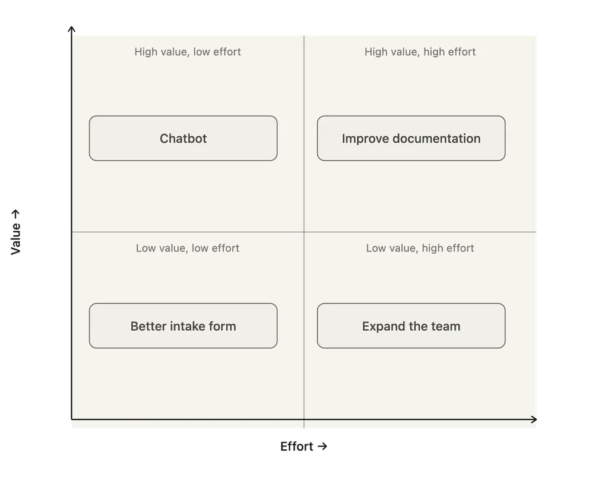
In scope for v1: automated lead qualification via a conversational flow that captures prospect context before the first human touchpoint; a self-service FAQ powered by an integrated knowledge base; enforced qualification fields; conversation logic tailored to user type (trial/free vs. paid); and intelligent routing to hand off qualified leads to a sales rep by predefined rules. Out of scope: automated lead scoring, analytics/bot performance tracking, multi-language support, and mobile optimization, all deprioritized to keep the v1 build tight.
The main technical constraint was having no in-house build resources, so the entire build had to be configured within FreshChat's paid tier rather than evaluated from scratch, which narrowed the options but also accelerated the timeline. Conversation design became the primary performance lever, since no custom NLP or intent modeling was possible within the tool.
Before touching FreshChat, I mapped every step and decision point as an activity diagram, then configured the logic, wrote the content, and set the conditions directly inside the tool. I demoed the build to the sales team to confirm the flow matched their expectations and that they understood what a lead notification would look like on their end, then worked with a web developer to integrate it on the site (debugging a first deployment where the chatbot didn't appear at all) before setting up the notification trigger so the sales team got notified immediately when a prospect submitted their information.
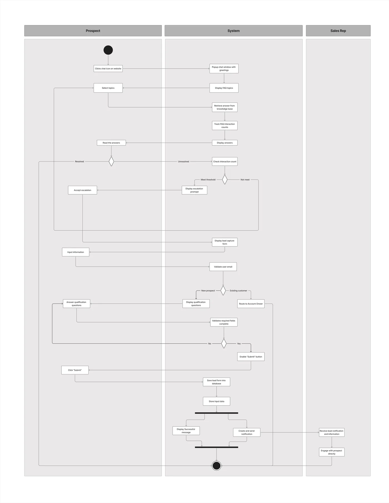
Impact
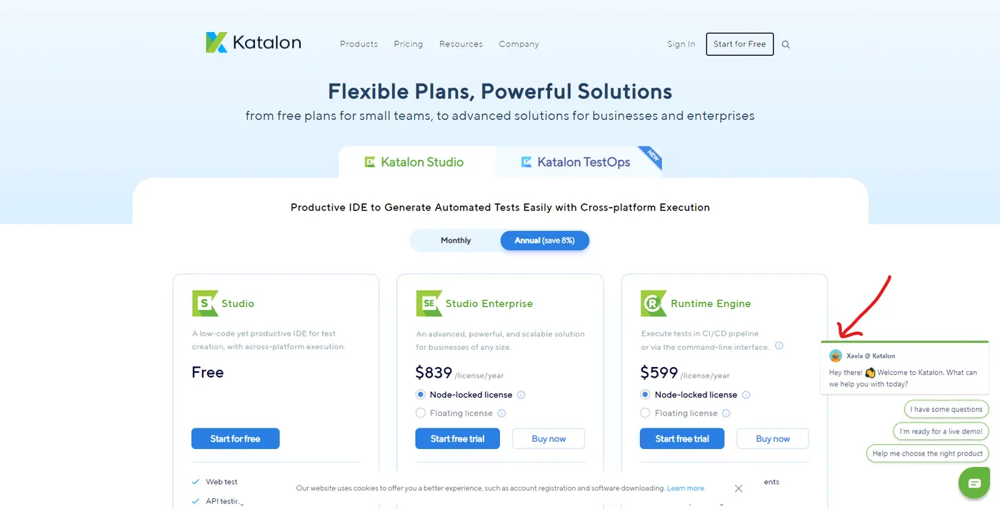
The chatbot became the primary intake point for inbound interest, handling conversations that previously landed directly in the sales team's inbox. Within the first quarter post-launch it generated 670 leads and over 5,000 conversations; of those leads, 320 converted to MQLs (a 48% lead-to-MQL conversion rate), with 176 ultimately qualifying as SALs. Beyond the numbers, FAQ responses went from a 48-hour wait to instant, and the sales team stopped fielding basic product questions and started focusing on conversations that were actually worth having.
What I'd do differently
The chatbot worked, but looking back, the biggest limitation wasn't the flow or the conversion numbers; it was maintenance. Every time the product changed, the conversation content had to be manually updated across the entire flow, which created an ongoing dependency on someone to keep the agent accurate, not sustainable long-term. If I were starting this today, I'd explore whether a lightweight AI-powered workflow could replace the rigid rule-based structure, so content updates wouldn't require manual adjustment every time.
Personal expense app
Try the live demo (opens in new tab)Context
My money was spread across several accounts, credit cards, digital wallets, and cash. Every tool showed me individual transactions, and none showed what they added up to: what was coming in, what was going out, and whether I was making progress. Consolidating it by hand was tedious enough that it kept slipping.
First attempt: a spreadsheet
I started with a Google Sheet: transactions copied in by hand, a new sheet every month, a new workbook every year. It gave me one place for everything, until maintaining it cost more than it returned:
- Repetitive entry. Recurring payments had to be re-entered every month.
- Missed movements. Transfers between my own accounts were easy to forget, and cash never went through a card at all.
- Fragile calculations. One wrong edit could quietly change a number somewhere else.
- No continuity. Comparing years meant linking separate workbooks.
- No context. The sheet did not record where a number came from or how it had changed.
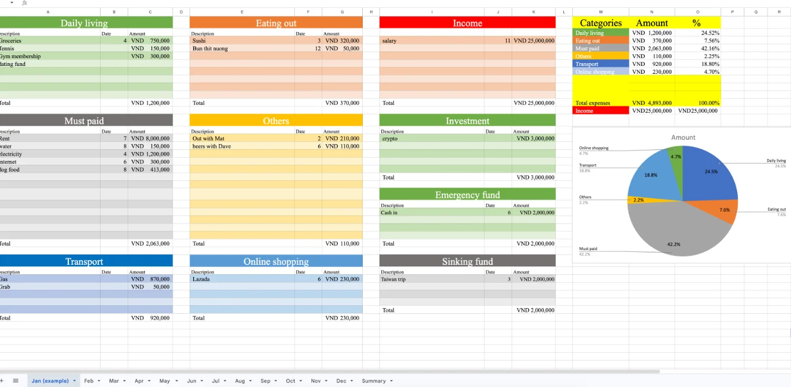
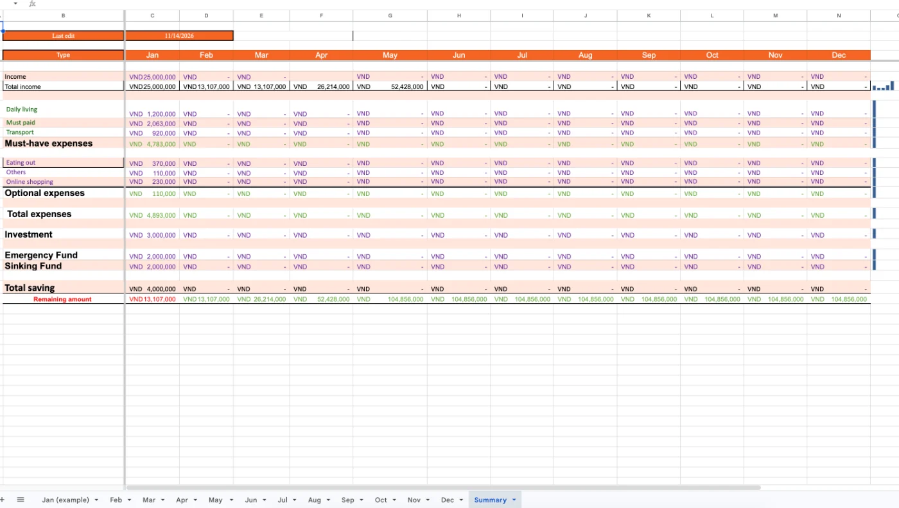
Then I accidentally deleted the 2024 workbook and lost a year of history. That made the risk concrete: a complete financial record should not live in a file that can be changed or deleted without an audit trail.
Second attempt: expense apps
The apps I tried were good at capture, with easier categorizing and cleaner summaries. Entry was still largely manual, and bank linking was either unavailable or something I was not comfortable with. More importantly, they did not answer the questions I was trying to answer:
- Where did my money go?
- Am I saving enough, or spending too much?
- How much of my spending is essential?
- How long could my emergency fund support me?
- Is my net worth moving in the right direction?
I did not need a better way to record expenses. I needed to know whether I was making progress toward my goals.
The deeper problem
Even with every transaction entered correctly, my totals could still be wrong. Neither the spreadsheet nor the apps understood what each movement represented:
- Bank descriptions were cryptic, and weeks later I could not tell what a charge was for.
- Refunds and cancelled transactions were hard to trace.
- Money set aside for savings or investments was counted as spending.
Accounting, not budgeting
I started by wanting a consistent structure that made entry less painful. Learning about the FIRE movement widened the goal: net worth and wealth over time, with charts for income, gains, losses, and expenses tied to my goals. Transactions are the foundation, and the bigger picture is what makes planning possible.
That led me to frame the problem as accounting rather than budgeting. Before counting a movement as spending or income, the system has to know where it came from and where it went:
- A wallet charge is linked to the bank top-up that funded it.
- A friend's repayment is linked to the expense it covered.
- A card payment or budget-pot top-up is a transfer, not new spending.
So the app models the relationships between movements instead of treating every transaction as an isolated row.
Design principle: trust before convenience
This is real financial data, so how it enters the system is a product decision. Nothing goes straight into the live database. Every import follows the same steps:
- Gather statements and screenshots from each account.
- Reconcile them with Claude's help.
- Review the proposed changes as one batch.
- Record a baseline of the ledger.
- Commit a script that can undo the batch.
- Write the changes.
- Check the ledger against the baseline again.
I chose this over automatic syncing: it is slower, but I can see exactly what changed and reverse it. The public demo follows the same principle. It runs the same code on mock data only, so anyone can explore the product without seeing my records.
What the app does
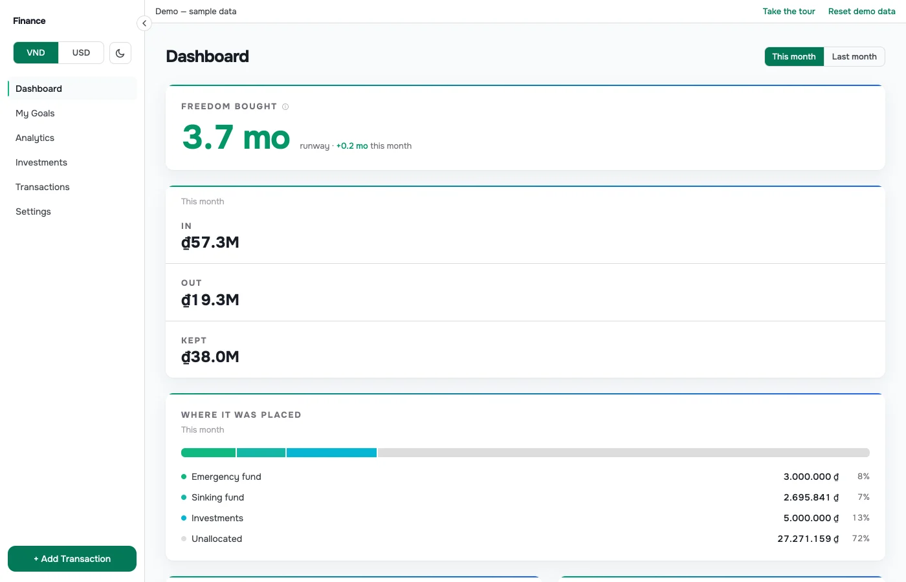
It does two related things. The ledger explains what happened to my money:
- Reconciles statements and screenshots in batches
- Recognizes recurring payments
- Separates transfers from spending and income
- Keeps calculations in tested code instead of editable cells
- Preserves one ledger across years
- Timestamps every row
- Keeps a rollback script behind each import
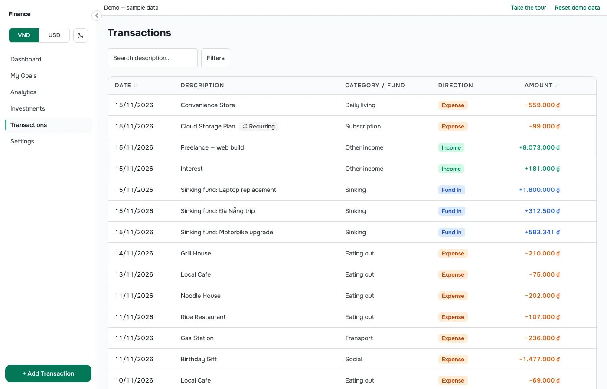
The planning features help me decide what to do next:
- Separates must-have from nice-to-have spending
- Tracks emergency, sinking, and investment funds
- Follows sinking-fund goals month by month
- Estimates emergency-fund runway
- Tracks net worth and FIRE progress
- Compares changes year over year
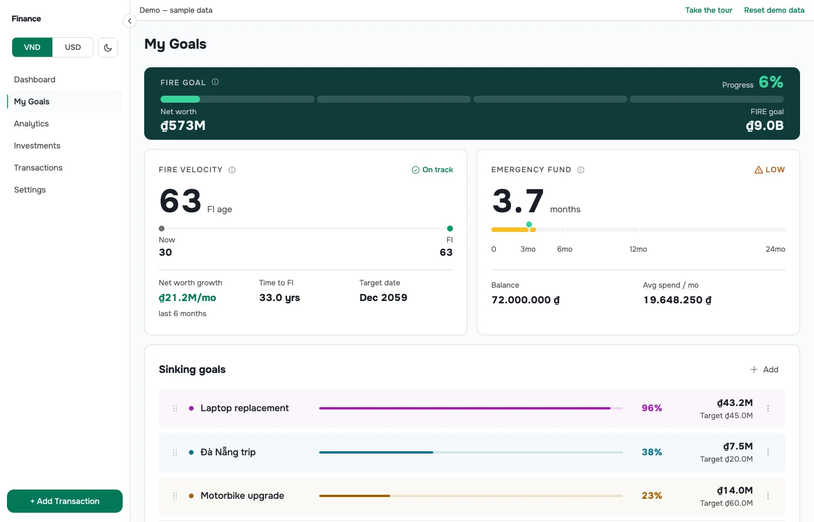
What changed day to day
- Monthly entry, not daily. I export my monthly bank statements and upload screenshots of the transactions. Claude parses them and asks about anything unclear. It takes less than five minutes. It is not fully automated, but I no longer enter transactions daily or reconstruct them later.
- Safer edits. One wrong number no longer disrupts the rest of my calculations.
- A forward view. I can open the app to see my current financial picture and what might happen next. I am building a feature to estimate when I could retire.
What I learned
The code was the smaller part of the work. I started in May while working full time, and I am about six and a half months in. Most of that time went into decisions: reconsidering direction, rebuilding what did not hold up, learning new tools, and designing an interface without a polished prototype to start from.
Deciding what to show was the hardest design problem. Which data is primary and which is secondary? What story does the screen tell? Is each metric relevant? Then comes the right chart for it, and every choice of color, layout, size, and calculation has to be easy to read. I did not want an enterprise SaaS product. I wanted something genuinely useful.
Building with AI makes a team's value clearer. Working alone with Claude, I had no one to test my judgment against, and without that check the output drifts toward the generic. I often wished for an engineer or a product designer in the room. It made me skeptical that AI replaces engineers and designers just because it can design and code at the same time.
Taking it public
Right now the app only holds my own data. Opening it to other users is a much bigger job: security, compliance, and regulation all apply once the data belongs to someone else, and building a finance app is not a walk in the park. Until then, the public demo runs on mock data only.
Help me test this
The app started as a replacement for a spreadsheet, but it has gradually become an attempt to answer a broader question: can a personal finance tool help me understand where my money is going and whether I am doing enough with it?
I built it for myself, so I do not yet know whether it solves a problem other people recognize. I am trying to learn:
- Whether people also struggle to combine several financial apps into one picture
- Whether they are unsure where their money is going
- Whether they want to track wealth and goals alongside expenses
- How much review they are willing to do in exchange for more reliable data
The product still needs a name, too. If you have a few minutes, I would love for you to:
- Suggest a name and explain why it fits
- Tell me what landed and what did not
- Share how you manage money today and what you are aiming for
Every question is optional. I do not ask for exact income, balances, or amounts. Contact details are optional and will only be used if you would like me to follow up.
Share your feedback (opens in new tab)